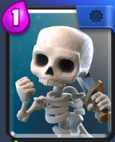
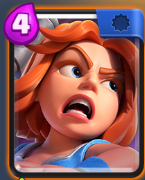
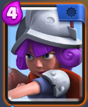

お気に入りカード
No.1スケルトン
クラロワクイズ スケルトンの大会レベルでの攻撃力は？:

- 気に入っているところ
- 単体攻撃のユニットの攻撃を1コストで受けられること
- 手札の平均コストが下げられること
- 手札の回転を速くできること
No.2バルキリー
クラロワクイズ バルキリーの大会レベルでのライフポイントは？:

- 気に入っているところ
- 範囲攻撃ユニットにも関わらず、単体ユニット並みの火力を持っていること
- 小型ユニットだけでなく、中型ユニット複数にも対抗できること
No.3マスケット銃士
クラロワクイズ マスケット銃士の射程距離は？:

- 気に入っているところ
- 単体ユニットだが、攻撃速度が速く、火力もあり、幅広い活躍をしてくれること
- 相手に呪文カードを使わせることが出来、相手デッキを探ることが出来ること
初心者おすすめカードへ
クラロワ概要へ戻る
ページトップへ戻る